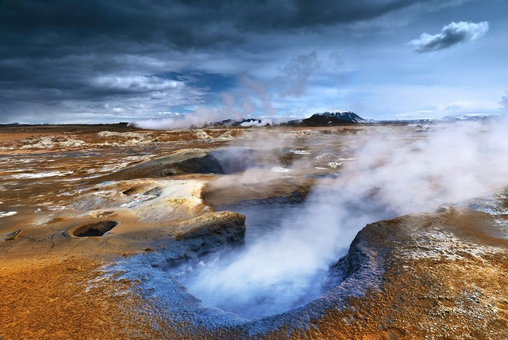
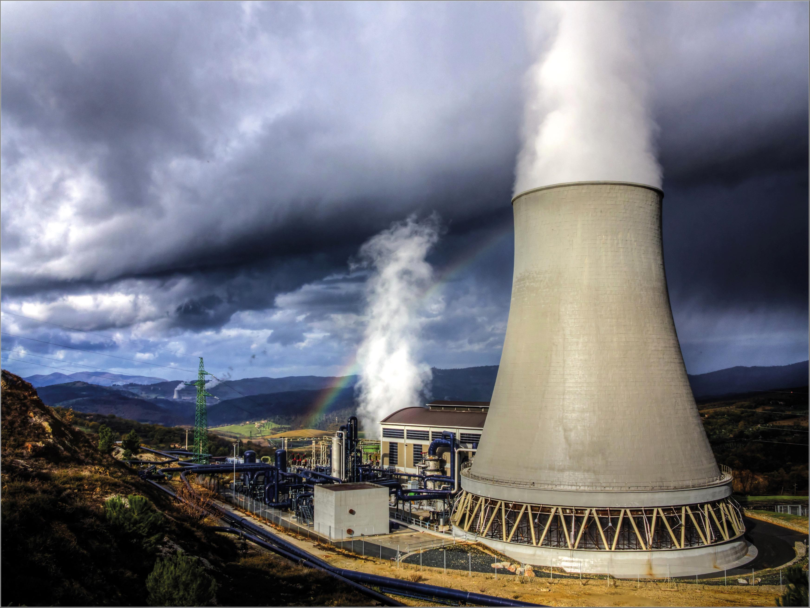

A energia geotérmica é uma forma de energia que se origina do calor interno da Terra e é considerada uma fonte limpa e renovável, disponível de forma constante na natureza. No entanto, sua exploração é mais fácil em áreas próximas à interseção das placas tectônicas. Essa energia pode ser convertida em eletricidade nas usinas geotérmicas ou usada diretamente para o aquecimento e resfriamento de edifícios. Embora possua diversas vantagens, é pouco utilizada tanto no Brasil quanto em todo o mundo.

Existem três categorias de Energia Geotérmica, que variam de acordo com a temperatura em que é extraída e sua entalpia, que é a quantidade de energia térmica que um fluido ou objeto pode trocar com o ambiente em kJ/kg ou kcal/kg. As categorias são definidas de acordo com a temperatura e podem ter pequenas variações dependendo do autor.
A primeira categoria é a de alta entalpia, com temperatura acima de 150 ºC, utilizada para produção de energia elétrica e refrigeração por absorção com amônia.
A segunda categoria é a de média entalpia, com temperatura entre 90 ºC e 150 ºC, utilizada em indústrias para secagem, refrigeração, lavagem, destilação e outros fins.
A terceira categoria é a de baixa entalpia, com temperatura entre 30 ºC e 90 ºC, usada na agricultura, alimentação, lazer e saúde para aquecimento de estufas, cultivo de cogumelos, centros de lazer e terapêutica termal, entre outros.
A quarta e última categoria é a de muito baixa entalpia, com temperatura abaixo de 30 ºC, utilizada em residências para aquecimento com bombas de calor e climatização.

Vantagens:
Trata-se de uma fonte de energia limpa, o que significa que não produz gases poluentes que possam ser liberados na atmosfera, não contribuindo para a intensificação do aquecimento global;
Possui maior produtividade do as demais energias;
Baixo custo de produção
Desvantagens:
Alto custo de instalação, principalmente em regiões onde as fontes geotérmicas possuem maior profundidade;
A instalação pode ocasionar fraturas em solos e rochas, além do afundamento da área de funcionamento;
Ruídos podem ser emitidos durante a emissão da energia.;